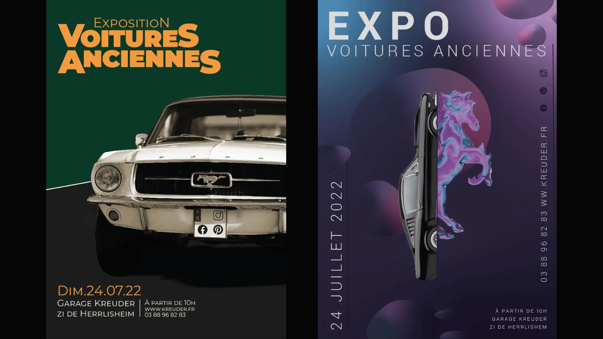
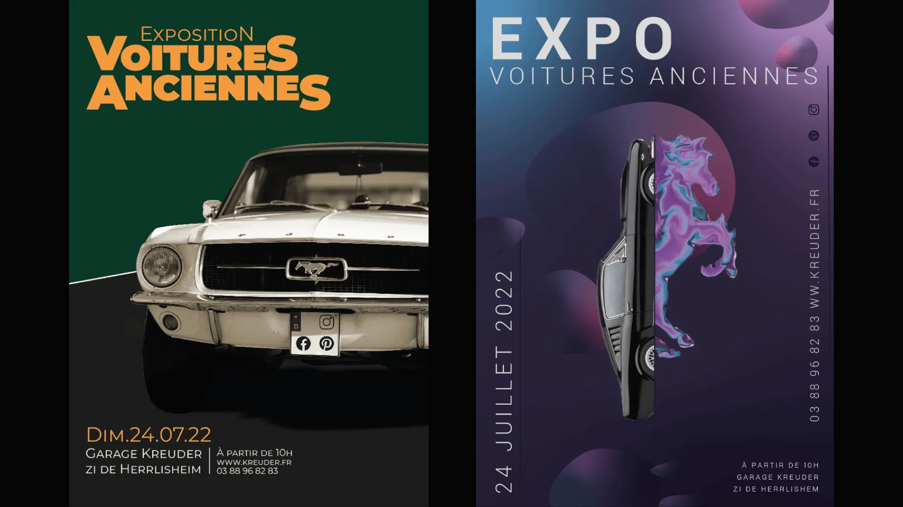

"Un aperçu de mon univers graphique"
Voici une sélection de projets réalisés récemment, entre design graphique et création web. Chaque projet est pensé sur-mesure, avec une attention particulière portée à l’ergonomie, au style et à l’identité du client.
💻 Les Créas d’Anna — un site WordPress e-commerce dédié à l’univers Cricut, pensé pour une navigation fluide et une mise en valeur des produits. 🤠Nexair — un site WordPress co-construit avec Fabien Coo, spécialiste du développement web, pour une entreprise experte en filtration industrielle.


 
